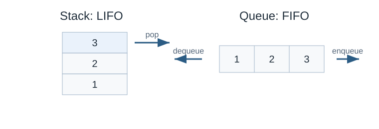

Stack & Queue
Stack และ queue เป็นโครงสร้างข้อมูลเชิงเส้นที่ จำกัดว่าเพิ่มและนำข้อมูลออกได้ทางไหน ข้อจำกัดนี้ทำให้ทุก operation เป็น O(1) และตรงกับลักษณะของโจทย์หลายประเภท

Stack and queue behavior. Original diagram for this guide.
Stack
Stack (กองซ้อน) ทำงานแบบ LIFO (Last In, First Out): ข้อมูลที่ใส่หลังสุดถูกนำออกก่อน เหมือนกองจาน เพิ่มและหยิบได้เฉพาะใบบนสุด (top)
push(x)ใส่xไว้บนสุดpop()นำตัวบนสุดออกtop()ดูตัวบนสุด
stack<int> st;
st.push(1);
st.push(2);
st.push(3);
cout << st.top() << '\n'; // 3
st.pop();
cout << st.top() << '\n'; // 2
cout << st.size(); // 2vector ใช้เป็น stack ได้เช่นกันด้วย push_back,
pop_back และ back ซึ่งสะดวกเมื่อต้องการวนดูทุกตัวใน
stack
ห้าม top() หรือ pop() ตอน stack ว่าง (runtime
error) ให้เช็ค st.empty() ก่อนเสมอ
Queue
Queue (แถวคอย) ทำงานแบบ FIFO (First In, First Out): ข้อมูลที่เข้าก่อนออกก่อน เหมือนแถวซื้อของ เข้าทางท้าย (back/rear) ออกทางหน้า (front)
queue<int> q;
q.push(1);
q.push(2);
q.push(3);
cout << q.front() << '\n'; // 1
q.pop();
cout << q.front() << '\n'; // 2ลองใส่ค่าชุดเดียวกันลงทั้ง stack และ queue แล้วกด pop เพื่อเทียบว่าแต่ละตัวนำค่าใดออก
Stack |
Queue |
|
|---|---|---|
หลักการ |
LIFO |
FIFO |
ใส่ข้อมูล |
|
|
นำออก |
|
|
ดูค่า |
|
|
ใช้บ่อยกับ |
วงเล็บ, DFS, undo, monotonic stack |
BFS, จำลองแถวคอย |
Deque
deque (double-ended queue) เพิ่มและนำออกได้
ทั้งสองด้าน ใน O(1)
และเข้าถึง dq[i] ได้เหมือน vector
deque<int> dq;
dq.push_back(1); // 1
dq.push_back(2); // 1 2
dq.push_front(0); // 0 1 2
dq.pop_back(); // 0 1
dq.pop_front(); // 1การประยุกต์ใช้
ตรวจวงเล็บ
ข้อความ {[()()]} มีวงเล็บถูกต้องหรือไม่ อ่านทีละตัว
ถ้าเป็นวงเล็บเปิดให้ push ถ้าเป็นวงเล็บปิดต้องคู่กับตัวบนสุดของ stack แล้ว pop เมื่ออ่านจบ
stack ต้องว่าง (เลือกโหมด “ตรวจวงเล็บด้วย stack” ใน widget
ด้านบนเพื่อดูทีละขั้น)
bool valid(const string& s) {
stack<char> st;
for (char c : s) {
if (c == '(' || c == '[' || c == '{') {
st.push(c);
} else {
if (st.empty()) return false;
char open = st.top();
st.pop();
if ((c == ')' && open != '(') || (c == ']' && open != '[') ||
(c == '}' && open != '{')) return false;
}
}
return st.empty();
}Monotonic stack: ค่าที่น้อยกว่าตัวแรกทางซ้าย
โจทย์: สำหรับแต่ละตำแหน่ง i หาตำแหน่ง
j < i ที่ใกล้ที่สุดซึ่ง
a[j] < a[i] วิธีตรง ๆ ใช้ O\left(
n^{2} \right) แต่ถ้าเก็บ stack ของตำแหน่งที่ค่ายังเรียงจากน้อยไปมาก
ทุกตัวจะถูก push และ pop ไม่เกินอย่างละครั้ง จึงเหลือ O(n)
vector<int> st; // เก็บ index, ค่าใน stack เพิ่มขึ้นจากล่างไปบน
for (int i = 0; i < n; i++) {
while (!st.empty() && a[st.back()] >= a[i]) st.pop_back(); // ตัวที่ใหญ่กว่าไม่มีวันเป็นคำตอบอีก
int answer = st.empty() ? -1 : st.back();
st.push_back(i);
}Sliding window minimum ด้วย deque
หาค่าน้อยสุดของทุกช่วงยาว k ที่ติดกัน: เก็บ index ใน deque โดยค่ายังเรียงจากน้อยไปมาก ตัวหน้าสุดคือค่าน้อยสุดของ window ปัจจุบัน ใช้เวลา O(n)
deque<int> dq;
for (int i = 0; i < n; i++) {
while (!dq.empty() && a[dq.back()] >= a[i]) dq.pop_back();
dq.push_back(i);
if (dq.front() <= i - k) dq.pop_front(); // หลุดออกจาก window แล้ว
if (i >= k - 1) cout << a[dq.front()] << ' ';
}Queue ในการจำลองและ BFS
Queue เหมาะกับการจำลองสิ่งที่ “มาก่อนได้ก่อน” และเป็นหัวใจของ BFS ในบท Graph Algorithm
ลองคิด
push 1, 2, 3 แล้ว pop หนึ่งครั้ง แล้ว push 4 ถ้าเป็น stack จะเหลืออะไร ถ้าเป็น queue จะเหลืออะไร
ทำไม monotonic stack จึงเป็น O(n) ทั้งที่มี
whileซ้อนอยู่ในfor
เฉลย
Stack: 1 2 4 (4 อยู่บนสุด) Queue: 2 3 4 (2 อยู่หน้าสุด)
แต่ละ index ถูก push หนึ่งครั้งและ pop ได้ไม่เกินหนึ่งครั้ง จำนวนรอบของ
whileรวมทั้งโปรแกรมจึงไม่เกิน n (amortized analysis)
โจทย์ฝึกฝน (Practice Problems)
ลองทำโจทย์เหล่านี้จาก CSES Problem Set เพื่อฝึกใช้ทักษะจากบทนี้ โดยเริ่มจากโจทย์ที่ง่ายที่สุดก่อน
Josephus Problem I (queue)
Nearest Smaller Values (monotonic stack)
Sliding Window Minimum (deque)
โจทย์เพิ่มเติม: CSES Problem Set และ programming.in.th